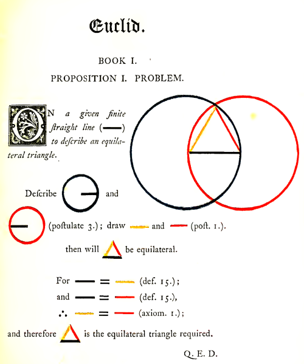
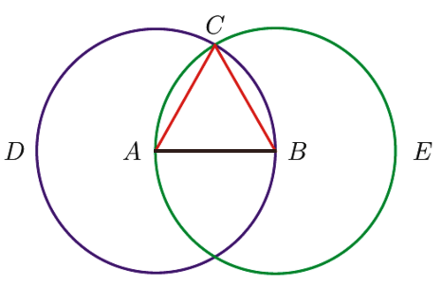

The first page from Byrne’s colorful treatment of Euclid from
the early 1800s
1. Axioms, theorems, proofs
1.1. Axioms, then theorems
One departure point from conditioned math to real, grown-up math is the whole idea of proving things mathematically. To prove something we take basic definitions and axioms and derive theorems based on these definitions and axioms. According to Wikipedia, an axiom, postulate, or assumption is a statement that is taken to be true, to serve as a premise or starting point for further reasoning and arguments. The word comes from the Greek axíōma (ἀξίωμα) ’that which is thought worthy or fit’ or ’that which commends itself as evident.’
It is generally accepted that Euclid’s Elements was the first to use axioms as a starting point to build and derive mathematical statements, rather than simply stating, formulaic or anecdotally, math. That is to say, with Euclid we prove a mathematical statement by backing up what we’re saying with definitions and axioms as proof. Here are the famous Euclidean postulates
- A straight line segment may be drawn from any given point to any other.
- A straight line may be extended to any finite length.
- A circle may be described with any given point as its center and any distance as its radius.
- All right angles are congruent.
- If a straight line intersects two other straight lines, and so makes the two interior angles on one side of it together less than two right angles, then the other straight lines will meet at a point if extended far enough on the side on which the angles are less than two right angles.
Included with is postulates are his “common notions,” which are his general mathematical axioms
- Things which are equal to the same thing are also equal to one another or if \(a = b\) and \(c = b\;\), then \(a = c\). .
- If equal things are added to equal things, the results are equal or if a = b, then a + c = b + c. .
- If equal things are subtracted from equal things, the remainders are equal.
- Things that coincide with one another are equal to one another.
- The whole is greater than the part.
Let’s analyze the Proposition
We may construct an equilateral triangle from a given line segment.
Euclid’s Proposition 1

Proof
- We start with a line segment \(AB\;\)
- Form two circles around \(AB\;\): one with center \(A\) and radius \(AB\;\), the other with center \(B\) and radius \(AB\;\).
- Let C be a point where the circles intersect.
- By Postulate 3, \(AB \cong AC\;\) and \(AB \cong BC\)
- By Common Notion 1, \(AC \cong BC\;\)
- Since the segments \(AB\;\), \(AC\;\), and \(BC\;\) are all congruent to each other, \(ABC\;\) is an equilateral triangle.
The MU puzzle
From Gödel, Escher, Bach, An Eternal Golden Braid by Douglas
Hofstadter
is an example of an unsolvable question we might
ask of a small, restricted, “toy” math world that is nevertheless a
formal system
See https://en.wikipedia.org/wiki/Formal_system
. The object of this experiment is to go from one
state of the system, namely, the initial string state MI, then by
applying the system’s inference rules, get to the string state MU.
For our toy world we are given only a starting string MI and
inference rules
i.e., if you have this state, then you can do this to it.
, or transformation rules on how to start changing
this string, i.e., building “new things”, which in effect amount to
theorems in our toy world:
| No. | Rule | Description | Example |
|---|---|---|---|
| 1 | xI → xIU | Append U at a string ending in I | MI → MIU |
| 2 | Mx → Mxx | Double the string after M | MIU → MIUIU |
| 3 | xIIIy → xUy | Replace III inside a string with U | MUIIIU → MUUU |
| 4 | xUUy → xy | Remove UU from inside a string | MUUU → MU |
And so our system has two rules to build up new string states and two
rules to reduce them down. In these inference rules the symbols M,
I, and U are the elements to build or reduce strings, while x, y
are simply variables that stand for sequences of the symbols. For
example, the string MI matches rule 2 for x = I, as well as rule 1
for x = M. Another possible string state is MII which matches rule
2 for x = II, and rule 1 for x = MI.
We’ll take a preliminary stab at getting from state MI of the system
to MU of the system by using the inference rules
In this “mini-system”, if 1. is an axiom, the 2. through
8.—and whatever further legal letter combinations—are, technically
speaking, the theorems of our mini-system.
:
MI(axiom … we haven’t started yet)MII(applying rule 2,x = I)MIIII(rule 2 again,x = II)MIIIIIIII(rule 2 again,x = IIII)MUIIIII(applying rule 3,x = M,y = IIIII)MUUII(rule 3,x = MU,y = II)MII(rule 4,x = M,y = II)MIIU(rule 1,x = MI)
…but this isn’t getting us to MU, there seems to be a problem…
Let’s give a formal description-specification for our toy system
- The set of symbols is
{M,I,U} - A string is well-formed if the first letter is
Mand there are no otherMletters. Examples:M,MIUIU,MUUUIII MIis the starting string, i.e. an axiom, i.e., a base, given rule- The rules of inference are defined in the basic rules towards building new theorems, aka, string states
Rephrasing the task, Can we get from MI to MU using the system
rules—and not just be churning out endless combinations of M, I,
and U to see what happens? That is, can we come up with a sequence
of string states theorems that result get to the desired state MU,
in effect a proof? Because if we can’t, we’re facing the whole
decidability issue, e.g., whether any program we write, no matter
how clever, might just generate string state after string state but
never arrive at a final definitive answer, yes or no.
As it turns out, no we cannot go from MI to MU. Which means we
should give up on attempting to show a path from MI to MU and
argue instead exactly why it can’t be done. But how?
The answer lies outside our toy system. And so by viewing this
situation from above, from outside, we might notice the basic fact
that we can never get the rules to produce the right number of I’s
that can then be dropped to leave just MU. We have rules to grow
strings with I’s, and one rule to take away I’s, but they never
sync up to do what we want. And to prove this, we will use an
invariant
An invariant is a property that holds true whenever we apply
any of the inference rules.
with mathematical induction.
First, note that to leverage rule 3 we would need to have a string in
a state where there are sequences of I’s divisible by \(3\). But since
we’re trying to prove the opposite, let’s come up with an invariant
that alludes to this
There is never a discrete sequence of I’s in any system-produced
string state with length divisible by 3…
Let’s check each of the rules that deal with I’s to see whether this
holds
- For the starting axiom, we have just one
I. \(\Rightarrow\) Invariant trivially holds. - Applying rule 2 means doubling the number of
I’s, i.e., we can produceI,II,IIII,IIIIIII(i.e., \(2^n\)I’s), but none of these sequence lengths are evermod 3 = 0\(\Rightarrow\) Invariant holds. - Yes, applying rule 3 will reduce the number of
I’s by 3 each application. However Actually, \(2^n -3\) is nevermod 3 = 0needs to be proved as well. , those \(2^{n}-3\)I’s sequences produced by rule 2 will never be divisible by3, meaning leftoverI’s. \(\Rightarrow\) Invariant holds.
Thus, we’ve shown that with the starting axiom MI it is not
possible to get to MU, because no sequence of rule-following steps
can turn a string starting with one I into a string with no I’s by
following the rules.
But again realize we’ve stepped outside our system and its rules to
do this bit of reasoning about MI to MU, i.e. our divisibility by
3 trick isn’t part of our toy system. That is to say, the MI to
MU question—and any program written to solve it—cannot be
answered by just following the system rules system. And so any
algorithm or program we might write would run and run, trying
different combinations of the inference rules indefinitely, not ever
able to derive the mod 3 = 0 trick, i.e., whether getting to MU is
possible or impossible. No, we had to insert the mod 3 = 0 trick
from outside the system to get to an answer.
➝ Bottom line: According to Kurt Gödel’s landmark Incompleteness
Theorem, it turns out every mathematical formal system has this
limitation
…and this was a huge shock (if not disappointment) to the
logic and math world at the time, dashing the hopes of David Hilbert
of settling the solvability issue. This coming on the heels of the
Russell’s Paradox “scandal” that also wreaked havoc on mathematical
logic…
. The Incompleteness Theorem basically says with any
formal system we cannot produce all possible (and necessary) truths
about it. Why? Because no system can prove (know) all truths about
its own structure and behavior. In our example, using an artificially
limited set of rules, we could not ascertain whether MI could ever
evolve to MU, and we needed to go outside the system’s rules to
find that out. Gödel means that whatever mathematical systems we might
cook up, we’ll eventually have to come up with something outside,
above that system’s set of rules, to prove all of its
postulates…
To say the least, this was and is a real game-changer! But as it applies to computers, it implies that any computer running any sort of software cannot be guaranteed to solve all manner of problems.